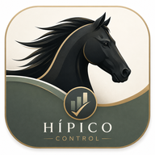

Recuperación segura
Usa esta opción sólo si Control Hípico no logra iniciar. El restablecimiento elimina el workspace, copias locales, cola pendiente y acceso offline guardados en este dispositivo. Los datos ya sincronizados en la nube no se eliminan.
Importante: los cambios locales que todavía no se hayan sincronizado no podrán recuperarse después de confirmar.
Lista para recuperar Control Hípico.
Control Hípico · Recuperación aislada del producto